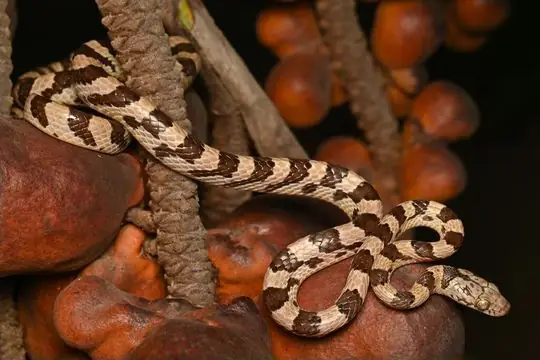
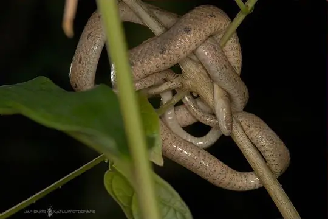
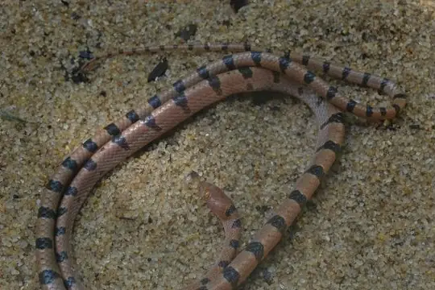
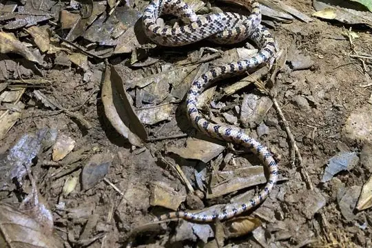
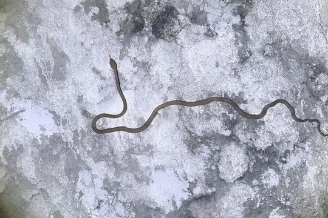
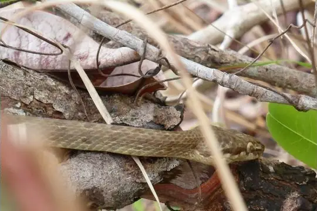
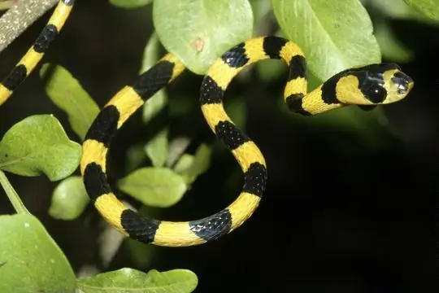

Lycodryas
The genus Lycodryas (family Pseudoxyrhophiidae) has 10 species in SnakeList (none venomous), recorded in 2 countries.
- 10species
- 10non-venomous
- 2countries
About the genus
A genus of the family Pseudoxyrhophiidae (Malagasy snakes and allies).
Species
Showing 10 species

Ampijoroa Tree SnakeLycodryas pseudogranuliceps
Antsiranana Tree SnakeLycodryas inopinae- No photo yetCollared Tree SnakeLycodryas guentheri

Manakara Tree SnakeLycodryas gaimardi
Nosy Bé Tree SnakeLycodryas granuliceps- No photo yetPlain Tree SnakeLycodryas inornatus

Spotted Tree Snake (cococola)Lycodryas cococola
Spotted Tree Snake (maculatus)Lycodryas maculatus
Yellow-and-black Tree SnakeLycodryas citrinus- No photo yetLycodryas carleti
No snakes in Lycodryas match.
About the genus Lycodryas
- Family: Pseudoxyrhophiidae.
- Recorded in: Comoros, Madagascar.